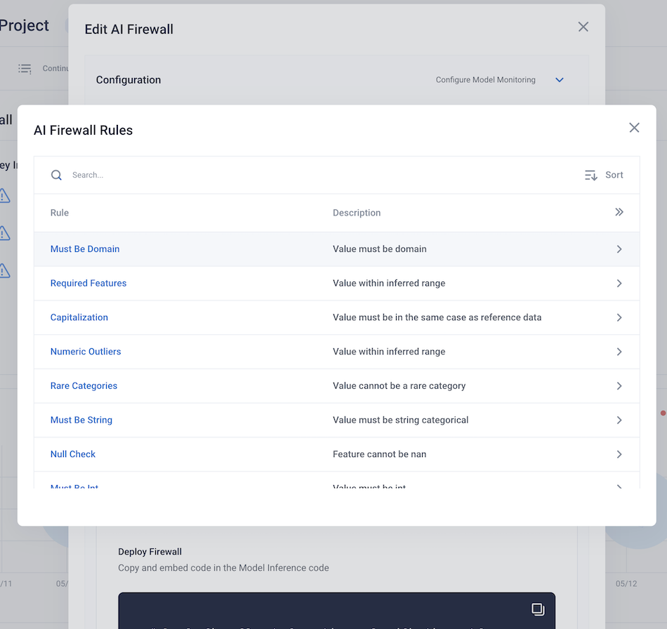
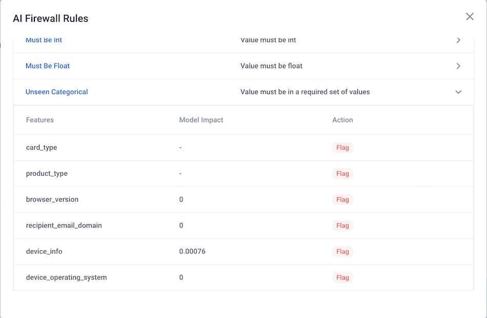

AI Firewall
The RIME AI Firewall depends on two important components for configuration:
The corresponding stress test configuration
An additional Firewall Rule JSON Configuration file.
The JSON configuration file is auto-generated from a stress test run. It contains some configuration parameters that are learned from your data and model during stress testing. These configuration parameters include:
The configured firewall action
The estimated performance impact of each firewall rule
The set of feature columns for each rule.
The configuration file is not meant to be edited directly. Configuration of actions is done through the Firewall class itself. The configuration can be viewed through the UI in the “Firewall Configuration” screen.
Clicking on a rule will give more details regarding the features the rule is configured over as well as the estimated performance change for each feature. 